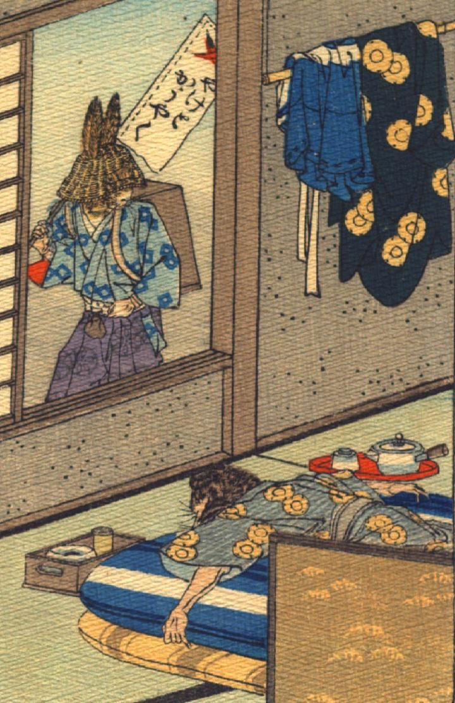

兎と狸。着物を着た狸が家の中でうつぶせになり布団に横たわっている。兎は着物に袴で、笈を背負って、編み笠をかぶっている。肩には「やけとかうやく」と書いた旗を持ち、薬売りに扮している。窓から狸を覗いている。
著作者：J.Dautremer／出典：親書誌：U426_nichibunken_0101：Le mont Katsi Katsi／日付：2006／資源識別子：U426_nichibunken_0101_0007_0000
Copyright (c)2010- International Research Center for Japanese Studies, Kyoto, Japan. All rights reserved.